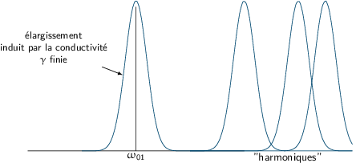
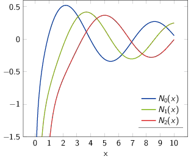

TD9 : Guides d'onde
1 Cavité cylindrique résonante
1.1 Détermination des fréquences de résonance
- Les équations de Maxwell sont \begin{align*} \rot\vv{E}=-\frac{\partial\vv{B}}{\partial t}&\quad\rot\vv{B}=\mu_0\epsilon_0\frac{\partial\vv{E}}{\partial t}\\ \rot\left(\rot\vv{E}\right)&=\underbrace{\cancel{\grad\left(\div\vv{E}\right)}}_{\rho=0\text{ pas de charge dans le vide}}-\Delta\vv{E}\\ \Delta\vv{E}-\mu_0\epsilon_0\frac{\partial^2\vv{E}}{\partial t^2}&=\square\vv{E}=\vv{0} \end{align*}
- Soit \(E_z\) la composante du champ électrique colinéaire à l'axe du
cylindre. En coordonnées cylindriques, l'expression de \(E_z(r,\theta,z,t)\)
s'écrit
\begin{align*}
E_z(r,\theta,z,t)=F(\theta)G(r)H(z)\exp\left(-i\omega t\right)
\end{align*}
En projetant l'équation de propagation selon \(\vv{u_z}\), on obtient
\begin{align*} \Delta E_z-\mu_0\epsilon_0\frac{\partial^2E_z}{\partial t^2}&=0 \end{align*}avec
\begin{align*} \Delta E_z&=\frac{1}{r}\frac{\partial}{\partial r}\left(r\frac{\partial E_z}{\partial r}\right)+\frac{1}{r^2}\frac{\partial^2E_z}{\partial\theta^2}+\frac{\partial^2E_z}{\partial r^2}\\ &=\frac{\partial^2E_z}{\partial r^2}+\frac{1}{r}\frac{\partial E_z}{\partial r}+\frac{1}{r^2}\frac{\partial^2E_z}{\partial\theta^2}+\frac{\partial^2E_z}{\partial z}\\ \frac{\partial^2E_z}{\partial t^2}&=-\omega^2E_z \end{align*}soit
\begin{align*} FH\frac{\partial^2G}{\partial r^2}+\frac{1}{r}FH\frac{\partial G}{\partial r}+\frac{1}{r^2}GH\frac{\partial^2F}{\partial t^2}+FG\frac{\partial^2H}{\partial z^2}+\mu_0\epsilon_0\omega^2FGH&=0\\ \underbrace{\frac{1}{G}\frac{\partial^2G}{\partial r^2}+\frac{1}{rG}\frac{\partial G}{\partial r}+\frac{1}{r^2F}\frac{\partial^2F}{\partial\theta^2}}_{f(r,\theta)}+\underbrace{\frac{1}{H}\frac{\partial^2H}{\partial z^2}}_{g(z)}+\underbrace{\mu_0\epsilon_0\omega^2}_{\text{constante}}&=0 \end{align*}Les deux fonctions \(f(r,\theta)\) et \(g(z)\) sont donc nécessairement des constantes d'où
\begin{align*} \frac{H''(z)}{H(z)}=\beta^2\to H(z)=H_0e^{\beta z}+H_1e^{-\beta z} \end{align*}On a donc
\begin{align*} \frac{G''(r)}{G(r)}+\frac{1}{r}\frac{G'(r)}{G(r)}+\frac{1}{r^2}\frac{F''(\theta)}{F(\theta)}+\mu_0\epsilon_0\omega^2+\beta^2&=0\\ \underbrace{r^2\frac{G''(r)}{G(r)}+r\frac{G'(r)}{G(r)}+r^2\left(\mu_0\epsilon_0\omega^2+\beta^2\right)}_{f(r)}+\underbrace{\frac{F''(\theta)}{F(\theta)}}_{g(\theta)}&=0 \end{align*}Pour les mêmes raisons, le rapport \(\frac{F''(\theta)}{F(\theta)}\) est donc constant et égal à \(\alpha^2\). On déduit que l'expression de \(F(\theta)\) est de la forme
\begin{align*} \frac{F''(\theta)}{F(\theta)}=\alpha^2\to F(\theta)=F_0e^{\alpha\theta}+F_1e^{-\alpha\theta} \end{align*}Remarques : α2 et β2 étant réels, α et β sont donc soit réels soit imaginaires purs.
- Les conditions aux limites imposent que \(\vv{E}(\theta)=\vv{E}(\theta+2\pi)\)
i.e. \(F\) est 2π périodique : α est donc nécessairement imaginaire
pur \(\alpha=i\lambda\).
\begin{align*}
F(\theta)=F_0e^{I\lambda\theta}+F_1e^{-i\lambda\theta}&=F(\theta+2\pi)\\
&=F_0e^{i\lambda\theta}e^{i2\pi\lambda}+F_1e^{-i\lambda\theta}e^{-i2\pi\lambda}
\end{align*}
d'où \(e^{i2\pi\lambda}=1\) i.e. λ est donc entier relatif.
Par ailleurs, en \(z=0\) et \(z=h\), la composante tangentielle du champ électriques est toujours continue. Les parois étant un conducteur parfait, le champ électriques est nul à l'intérieur d'où les relations
\begin{align*} \vv{E}_\parallel(z=0)=E_r(z=0)\vv{u_r}+E_\theta(z=0)\vv{u_\theta}&=\vv{0}\\ D_r(r,\theta)H'(z=0)e^{-i\omega t}\vv{u_r}+D_\theta(r,\theta)H'(z=0)e^{-i\omega t}\vv{u_\theta}&=\vv{0}\\ H'(z=0)&=0 \end{align*}De même en \(z=h\), \(H'(z=h)=0\). Or \(H'\) est égal à \(H_0\beta e^{\beta z}-H_1\beta e^{-i\beta}\) soit
\begin{align*} \text{en }z=0&\to H_0\beta-H_1\beta=0\to H_0=H_1\\ \text{en }z=h&\to H_0\beta e^{\beta h}-H_1\beta e^{-\beta h}=0\to e^{\beta h}-e^{-\beta h}=0 \end{align*}Il existe une solution "triviale" où β est un réel nul. Si \(\beta=i\delta\) on obtient
\begin{align*} e^{i\delta h}-e^{i\delta h}=\sin\delta h=0\to\delta h=p\pi\text{ avec }p\in\mathbb{N} \end{align*}La constante β est donc égale à \(\frac{ip\pi}{h}\). On déduit que l'expression de la fonction \(H(z)\) est
\begin{align*} H(z)&=H_0\left(e^{\frac{ip\pi}{h}z}+e^{-\frac{ip\pi}{h}z}\right)=2H_0\cos\left(\frac{p\pi}{h}z\right) \end{align*} - L'équation satisfaite par \(G(r)\) est
\begin{align*}
r^2\frac{G''(r)}{G(r)}+r\frac{G'(r)}{G(r)}+r^2\left(\mu_0\epsilon_0\omega^2+\beta^2\right)+\alpha^2&=0\\
r^2G''(r)+rG'(r)+\left(\alpha^2+r^2\beta^2+r^2\mu_0\epsilon_0\omega^2\right)G(r)&=0\\
\text{ avec }\alpha^2=-\lambda^2\text{ et }\beta^2=-\frac{p^2\pi^2}{h^2}&\\
r^2G''(r)+rG'(r)+\left[\left(\mu_0\epsilon_0\omega^2-\frac{\pi^2}{h^2}p^2\right)r^2-\lambda^2\right]G(r)&=0
\end{align*}
La fonction \(\Gamma(u)\) est telle que \(\Gamma(\gamma r)=G(r)\) avec γ une constante quelconque. Les dérivées de \(G(r)\) peuvent donc s'écrire
\begin{align*} G'(r)&=\frac{\partial G}{\partial r}=\frac{\partial\Gamma(u)}{\partial u}\times\frac{\partial u}{\partial r}\\ &\text{où }u=\gamma r\to\frac{\partial u}{\partial r}=\gamma\\ G'(r)&=\gamma\frac{\partial\Gamma(u)}{\partial u}\\ G''(r)&=\gamma\frac{\partial\left(\frac{\partial\Gamma}{\partial u}\right)}{\partial r}\\ &=\gamma\times\frac{\partial^2\Gamma(u)}{\partial u^2}\times\frac{\partial u}{\partial r}=\gamma^2\frac{\partial^2\Gamma(u)}{\partial u^2} \end{align*}L'équation solution de \(G(r)\) est, exprimée en fonction de Γ,
\begin{align*} \frac{u^2}{\cancel{\gamma^2}}\cancel{\gamma^2}\frac{\partial^2\Gamma}{\partial u^2}+\frac{u}{\cancel{\gamma}}\cancel{\gamma}\frac{\partial\Gamma}{\partial u}+\left[\left(\mu_0\epsilon_0\omega^2-\frac{\pi^2}{h^2}p^2\right)\frac{u^2}{\gamma^2}-\lambda^2\right]\Gamma=0 \end{align*}En choisissant \(\gamma\) tel que \(\gamma^2=\mu_0\epsilon_0\omega^2-\frac{\pi^2}{h^2}p^2\), on obtient l'équation
\begin{align*} u^2\Gamma''+u\Gamma'+\left(u^2-\lambda^2\right)\Gamma=0 \end{align*}qui correspond à l'équation de Bessel d'ordre λ avec λ entier. Les solutions de cette équation sont de la forme
\begin{align*} \Gamma(u)=A_\lambda J_\lambda(u)+B_\lambda N_\lambda(u) \end{align*}où
- \(J_\lambda\) est la fonction de Bessel de 1ère espèce
- \(N_\lambda\) est la fonction de Bessel de 2ème espèce ou fonction de Neumann
La fonction \(G(r)=A_\lambda J_\lambda(\gamma r)+B_\lambda N_\lambda(\gamma r)\) doit être bornée en \(r\to0\) : or \(N_\lambda(\gamma r)\to\left(\gamma r\right)^{-\lambda}\) pour \(r\to0\). Si \(\lambda>0\) 1 il y a donc divergence de la fonction \(G(r\to0)\) imposant que la constante \(B_\lambda\) soit nulle.
1pour les fonctions de Bessel, on considère toujours λ > 0
Par ailleurs, en \(r=a\), la composante tangentielle du champ électrique est conservée d'où \(E_z(a,\theta,z,t)=E_\text{paroi}(a,\theta,z,t)=0\) soit \(G(a)=A_\lambda J_\lambda(\gamma a)=0\). La fonction de Bessel \(J_\lambda\) est nulle pour \(\gamma a=x_{\lambda n}\) où \(x_{\lambda n}\) est le \(n\)-ième zéro de la fonction de Bessel \(J_\lambda(x)\).
Les fréquences de résonance ω se déduisent alors de
\begin{align*} \gamma^2&=\mu_0\epsilon_0\omega^2-\frac{\pi^2}{h^2}p^2=\left(\frac{x_{\lambda n}}{a}\right)^2\\ \omega&=c\sqrt{\frac{\pi^2}{h^2}p^2+\frac{x_{\lambda n}^2}{a^2}} \end{align*}En résumé, l'expression de \(E_z(r,\theta,z,t)=F(\theta)G(r)H(z)\exp(-i\omega t)\) se décompose en
- \(F(\theta)=F_0e^{i\lambda\theta}+F_1e^{-i\lambda\theta}=F\cos(\lambda\theta+\phi_\lambda)\),
- \(G(r)=A_\lambda J_\lambda(\gamma r)\),
- \(H(z)=H\cos\left(\frac{\pi p}{h}z\right)\),
où \(F_0,F_1,A_\lambda,H\) sont autant de constantes et \(\lambda,p\) sont des entiers.
\begin{align*} E_z(r,\theta,z,t)=E_{0\lambda}J_\lambda(\gamma r)\cos\left(\frac{\pi p}{h}z\right)\cos\left(\lambda\theta+\phi_\lambda\right)\exp(-i\omega t) \end{align*}
1.2 Étude du mode fondamental
- Le problème est invariant par rotation autour de \(Oz\) : le champ électrique
ne dépend donc pas de \(\theta\to
F(\theta)=\text{constante}\to\lambda=0\). D'autre part, le mode fondamental
correspond à la plus petite des valeurs de ω i.e. celle correspondant
donc à \(p=0\) et \(n=1\) soit
\begin{align*}
\omega&=c\sqrt{\frac{\pi^2}{h^2}p^2+\frac{x_{\lambda n}^2}{a^2}}\\
\omega_{01}&=c\frac{x_{01}}{a}
\end{align*}
La fonction \(G(r)\) devient égale à \(A_0J_0\left(\frac{x_{01}}{a}r\right)\), l'expression de \(E_z\) se limitant à
\begin{align*} E_z(r,\theta,z,t)&=E_0J_0\left(\frac{x_{01}}{a}r\right)\exp(-i\omega t) \end{align*}En raison des symétries du problèmes, le plan \((\vv{u_r},\vv{u_z})\) est plan de symétrie, le champ électrique \(\vv{E}\) appartenant nécessairement )à ce dernier : \(E_\theta=0\). Par ailleurs, l'expression de \(E_r\) est de la forme \(D(r,\theta)H'(z)\exp(-i\omega t)\) avec \(H'(z)=-H\frac{\pi p}{h}\sin\left(\frac{\pi p}{h}z\right)=0\) pour \(p=0\). La composante radiale du champ électrique est donc également nulle.
Le champ électrique est ainsi
\begin{align*} \vv{E}=E_0J_0\left(\frac{x_{01}}{a}r\right)\exp(-i\omega_{01}t)\,\vv{u_z} \end{align*}confirmant l'invariance par rotation autour de l'axe \(Oz\) et son indépendance vis-à-vis de la composante \(z\).
- À l'interface cavité-plan, la composante normale du champ magnétique est
conservée d'où \(B_z(z=0)=B_\text{paroi}(z=0)=0\). En appliquant la relation de
Maxwell-Faraday, on déduit le champ magnétique dans la cavité
\begin{align*}
\rot\vv{E}=-\frac{\partial\vv{B}}{\partial t}=-i\omega\vv{B}
\end{align*}
soit
\begin{align*} i\omega B_r&=\frac{1}{r}\frac{\partial E_z}{\partial\theta}-\frac{\partial E_\theta}{\partial z}=0\to B_r=0\\ i\omega B_\theta&=\cancel{\frac{\partial E_r}{\partial z}}-\frac{\partial E_z}{\partial r}\\ i\omega B_z&=\frac{1}{r}\left[\frac{\partial}{\partial r}(rE_\theta)-\frac{\partial E_r}{\partial\theta}\right]\to B_z=0 \end{align*}Le champ magnétique s'écrit
\begin{align*} \vv{B}&=\frac{i}{\omega}\frac{x_{01}}{a}E_0J'_0\left(\frac{x_{01}}{a}r\right)\exp(-i\omega_{01} t)\,\vv{u_\theta}\\ &=\frac{i}{c}E_0J'_0\left(\frac{x_{01}}{a}r\right)\exp(-i\omega_{01}t)\,\vv{u_\theta} \end{align*} - Application numérique : \begin{align*} \omega_{01}&=c\frac{x_{01}}{a}=3\,10^8\times\frac{2.4048}{0.11}=\unit[6.55\,10^9]{rad.s}^{-1}\\ \nu_\text{fonda.}&=\frac{\omega_{01}}{2\pi}=\unit[1.04]{GHz} \end{align*}
1.3 Facteur de qualité de la cavité pour le mode fondamental

- Calcul de l'énergie électromagnétique dans la cavité pour le mode fondamental
i.e. \(\omega_{01}=\omega_{0}\)
\begin{align*}
\mathcal{E}&=\iiint u_\text{EM}\,d\tau\\
&=\iiint\left(\frac{\epsilon_0E^2}{2}+\frac{B^2}{2\mu_0}\right)d\tau\text{ où } E,B\text{ sont les parties réelles}\\
u_\text{EM}&=\frac{\epsilon_0}{2}E_0^2J_0^2\left(\frac{x_{0}}{a}r\right)\cos^2\omega_{0}t+\frac{1}{2\mu_0c^2}E_0^2J'^2_0\left(\frac{x_{0}}{a}r\right)\sin^2\omega_{0}t\\
&=\frac{\epsilon_0E_0^2}{2}\left[J^2_0\left(\frac{x_{0}}{a}r\right)\cos^2\omega_{0}t+J'^2_0\left(\frac{x_{0}}{a}r\right)\sin^2\omega_{0}t\right]
\end{align*}
L'énergie totale stockée dans la cavité est
\begin{align*} \mathcal{E}&=\frac{\epsilon_0E_0^2}{2}\int_0^hdz\int_0^{2\pi}d\theta\left[\cos^2\omega_0t\int_0^aJ_0^2\left(\frac{x_{01}}{a}r\right)rdr+\sin^2\omega_0t\int_0^aJ'^2_0\left(\frac{x_{01}}{a}r\right)rdr\right]\\ &=\pi h\epsilon_0E_0^2\left[\cos^2\omega_0t\int_0^aJ_0^2\left(\frac{x_{01}}{a}r\right)rdr+\sin^2\omega_0t\int_0^aJ'^2_0\left(\frac{x_{01}}{a}r\right)rdr\right] \end{align*}En posant \(x=\frac{x_{01}}{a}r, dx=\frac{x_{01}}{a}dr\) avec \(x\in[0,x_{01}]\), on obtient l'expression suivante
\begin{align*} \mathcal{E}&=\pi h\epsilon_0E_0^2\times\frac{a^2}{x_{01}^2}\left[\cos^2\omega_0t\int_0^{x_{01}}xJ_0^2(x)dx+\sin^2\omega_0t\int_0^{x_{01}}xJ'^2_0(x)dx\right]\\ &=\pi a^2h\times\epsilon_0E_0^2\times\frac{I}{x_{01}^2} \end{align*}En exprimant \(\mathcal{E}=K_1E_0^2\), on déduit que \(K_1\) est égal à
\begin{align*} K_1=\underbrace{\pi a^2h}_{\substack{\text{volume}\\\text{de la cavité}}}\times\frac{I}{x_{01}^2}\epsilon_0 \end{align*} - La densité surfacique de charge sur la surface du cylindre est nulle car le
champ électrique est colinéaire à l'axe du cylindre \(Oz\). En revanche, aux
extrémités du cylindre, sur la surface des parois métalliques i.e. en \(z=0\)
et \(z=h\), la discontinuïté de la composante normale du champ électrique
impose
- en \(z=0\) \begin{align*} \vv{u_z}.\left(\vv{E}(z=0^+)-\cancel{\vv{E}(z=0^-)}\right)&=\frac{\sigma(z=0)}{\epsilon_0}\\ \sigma(z=0)&=\epsilon_0E_0J_0\left(\frac{x_{01}}{a}r\right)\exp(-i\omega_0t) \end{align*}
- en \(z=h\) \begin{align*} \vv{u_z}.\left(\cancel{\vv{E}(z=h^+)}-\vv{E}(z=h^-)\right)&=\frac{\sigma(z=h)}{\epsilon_0}\\ \sigma(z=h)&=-\epsilon_0E_0J_0\left(\frac{x_{01}}{a}r\right)\exp(-i\omega_0t) \end{align*}
On note que la somme des charges demeure nulle (le système est donc bien isolé).
Pour le calcul de la densité surfacique de courant \(J_S\), chacune des parois métalliques portent des courants :
- paroi cylindrique en \(r=a\) \begin{align*} \vv{u_r}\times\left(\cancel{\vv{B}(r=a^+)}-\vv{B}(r=a^-)\right)&=\mu_0\vv{j_S}(r=a)\\ \vv{j_S}(r=a)&=-\frac{E_0}{\mu_0c}J'_0\left(\frac{x_{01}}{\cancel{a}}\cancel{a}\right)\sin\omega_0t\,\vv{u_r}\times\vv{u_\theta}\\ &=-\frac{E_0}{\mu_0c}J'_0(x_{01})\sin\omega_0t\,\vv{u_z}=\text{constante} \end{align*}
- paroi plane en \(z=0\) \begin{align*} \vv{u_z}\times\left(\vv{B}(z=0^+)-\cancel{\vv{B}(z=0^-)}\right)&=\mu_0\vv{j_S}(z=0)\\ \vv{j_S}(z=0)&=\frac{E_0}{\mu_0c}J'_0\left(\frac{x_{01}}{a}r\right)\sin\omega_0t\,\vv{u_z}\times\vv{u_\theta}\\ &=-\frac{E_0}{\mu_0c}J'_0\left(\frac{x_{01}}{a}r\right)\sin\omega_0t\,\vv{u_r} \end{align*}
- paroi plane en \(z=h\) \begin{align*} \vv{u_z}\times\left(\cancel{\vv{B}(z=h^+)}-\vv{B}(z=h^-)\right)&=\mu_0\vv{j_S}(z=h)\\ \vv{j_S}(z=h)&=-\frac{E_0}{\mu_0c}J'_0\left(\frac{x_{01}}{a}r\right)\sin\omega_0t\,\vv{u_z}\times\vv{u_\theta}\\ &=+\frac{E_0}{\mu_0c}J'_0\left(\frac{x_{01}}{a}r\right)\sin\omega_0t\,\vv{u_r} \end{align*}
- Calcul des puissances dissipées sur chacune des parois
\begin{align*}
d^2P_\text{latérale}&=R_Sj^2_S(r=a)dS\\
\langle P_\text{latérale}\rangle&=R_S\times\frac{1}{(\mu_0c)^2}J'^2_0(x_{01})\langle\sin^2\omega_0t\rangle\times2\pi ah\times E_0^2\\
&=\underbrace{\frac{R_S}{(\mu_0c)^2}J'^2_0(x_{01})\pi ah}_{K_2}\times E_0^2\\
d^2P_\text{plan}(z=0)&=R_Sj^2_S(z=0)dS\\
\langle P_\text{plan}(z=0)\rangle&=\frac{R_S}{(\mu_0c)^2}\langle\sin^2\omega_0t\rangle\times\int_0^{2\pi}d\theta\int_0^aJ'^2_0\left(\frac{x_{01}}{a}r\right)rdr\times E_0^2\\
&=\frac{R_S}{(\mu_0c)^2}\pi\times\frac{a^2}{x_{01}^2}\times\underbrace{\int_0^{x_{01}}xJ'^2_0(x)dx}_{I}\times E_0^2\\
&=\underbrace{\frac{\pi a^2\,R_S}{(\mu_0c)^2}I}_{K_3}\times E_0^2
\end{align*}
En l'absence de source compensant les pertes, la variation de l'énergie totale au cours du temps est uniquement due à la dissipation de l'énergie sur les parois de la cavité d'où
\begin{align*} \frac{d\mathcal{E}}{dt}&=-\langle P_\text{latérale}\rangle-2\langle P_\text{paroi}\rangle\\ K_1\frac{dE^2_0}{dt}&=-K_2E_0^2-2K_3E_0^2\\ 2K_1E_0\frac{dE_0}{dt}+(K_2+2K_3)E_0^2&=0\\ \frac{dE_0}{dt}+\frac{K_2+2K_3}{2K_1}E_0&=0 \end{align*}En posant \(\tau=\frac{2K_1}{K_2+2K_3}\), l'équation précédente devient
\begin{align*} \frac{dE_0}{dt}+\frac{1}{\tau}E_0=0 \end{align*}dont la solution est
\begin{align*} E_0(t)=E_0(t=0)\,e^{-t/\tau} \end{align*}La largeur de raie \(\Delta f=\frac{1}{\pi\tau}\) est donc égale à
\begin{align*} \Delta f_0=\frac{1}{\pi\tau}=\frac{K_2+2K_3}{2\pi K_1} \end{align*}le facteur de qualité \(Q\) étant égal à
\begin{align*} Q&=\frac{f_0}{\Delta f_0}=\frac{\omega_0}{2\pi}\times\pi\tau\\ &=\frac{\omega_0K_1}{K_2+2K_3} \end{align*}Discussion :
Le facteur de qualité d'un système est, de manière très générale, une mesure sans unité du taux d'amortissement d'un oscillateur. Plus le facteur de qualité est élevé, plus la bande passante est petite, et plus la résonance est "piquée". Le facteur de qualité permet donc de quantifier la "qualité d'un filtre" (qu'il soit électronique, acoustique, optique…) : plus \(Q\) est élevé, plus le filtre est sélectif.
En optique, la durée de vie moyenne d'un photon plongé dans une cavité résonante telle qu'une cavité Fabry-Pérot est directement proportionnel au facteur de qualité. Par ailleurs, ce facteur de qualité \(Q=\frac{f_0}{\Delta f_0}\) est également appelé la finesse.
Il existe en outre une technique d'émission laser consistant en augmenter rapidement et brièvement le facteur de qualité afin d'émettre un pulse laser beaucoup plus intense qu'en mode continu. Cette technique est connue sour le nom de Q-switching ou commutation Q et est, en particulier, utilisée pour retirer les tatouages.
2 Résolution de l'équation de Bessel ANNEXE
2.1 Équation de Bessel
La résolution de l'équation de Laplace en coordonnées cylindriques \((r,\theta,z)\) :
\begin{align*} \Delta V=\frac{\partial^2V}{\partial r^2}+\frac{1}{r}\frac{\partial V}{\partial r}+\frac{1}{r^2}\frac{\partial^2V}{\partial\theta^2}+\frac{\partial^2V}{\partial z^2}=0 \end{align*}peut se faire en cherchant une solution de la forme \(V(,r\theta,z)=R(r)\Theta(\theta)Z(z)\). On obtient alors pour \(\Theta\)
\begin{align*} \frac{d^2\Theta}{d\theta^2}=-\nu^2\Theta\quad\text{soit}\quad\Theta=C_\nu\cos(\nu\theta)+D_\nu\sin(\nu\theta) \end{align*}où \(\nu,C_\nu\) et \(D_\nu\) sont des constantes. Pour \(Z\), on a de même
\begin{align*} \frac{d^2Z}{dz^2}=k^2Z\quad\text{soit}\quad Z=A_ke^{kz}+B_ke^{-kz} \end{align*}où \(k,A_k\) et \(B_k\) sont des constantes. L'équation décrivant l'évolution de \(R\) devient
\begin{align*} r^2\frac{d^2R}{dr^2}+r\frac{dR}{dr}+(k^2r^2-\nu^2)R=0 \end{align*}En faisant le changement de variable \(x=kr\), on obtient
\begin{align*} x^2\frac{d^2R}{dx^2}+x\frac{dR}{dx}+(x^2-\nu^2)R=0 \end{align*}Cette équation est l'équation de Bessel d'ordre ν.
2.2 Fonctions de Bessel et fonctions de Neumann
 |
 |
Une solution de l'équation de Bessel est la fonction de Bessel de 1ère espèce \(J_\nu(x)\) définie par
\begin{align*} J_\nu(x)=\sum_{k=0}^{+\infty}\frac{(-1)^k}{\Gamma(k+1)\Gamma(\nu+k+1)}\left(\frac{x}{2}\right)^{\nu+2k} \end{align*}où \(\Gamma(x)\) est la fonction définie par
\begin{align*} \Gamma(x)=\int_0^{+\infty}e^{-t}t^{x-1}dt \end{align*}Les variations des permières fonctions de Bessel sont données sur la Figure 1. Une autre solution de l'équation de Bessel est \(J_{-\nu}(x)\). Lorsque \(\nu\) n'est pas entier, \(J_\nu(x)\) et \(J_{-\nu}(x)\) sont linéairement indépendants. Si \(\nu=n\) est entier, on peut montrer que
\begin{align*} J_n(x)=(-1)^nJ_n(-x) \end{align*}La fonction de Bessel de 2ème espèce ou fonction de Neumann \(N_\nu(x)\) est définie par
\begin{align*} N_\nu(x)=\lim_{m\to\nu}\left(\frac{\cos(m\pi)J_m(x)-J_{-m}(x)}{\sin(mx)}\right) \end{align*}Les variations des premières fonctions de Neumann sont données sur la Figure 1. On peut montrer que
\begin{align*} N_\nu(x)\underset{x\to0}{\longrightarrow}x^{-\nu}\quad\text{et}\quad N_\nu(x)\underset{x\to+\infty}{\longrightarrow}\ln x \end{align*}En fonction de la nature du paramètre ν, on distingue deux types de solution à l'équation de Bessel:
- si ν n'est pas entier : la solution de l'équation de Bessel est une combinaison linéaire de \(J_\nu(x)\) et \(J_(-\nu)(x)\) \begin{align*} R(x)=C_1J_\nu(x)+C_2J_{-\nu}(x) \end{align*}
- si ν est entier : si \(\nu=n\), \(J_n(x)\) et \(J_n(-x)\) ne sont pas linéairement indépendants du fait que \(J_n(x)=(-1)^nJ_n(-x)\). On peut montrer que la solution de l'équation de Bessel est alors une combinaison linéaire de \(J_n(x)\) et \(N_n(x)\) \begin{align*} R(x)=C_1J_n(x)+C_2N_n(x) \end{align*}